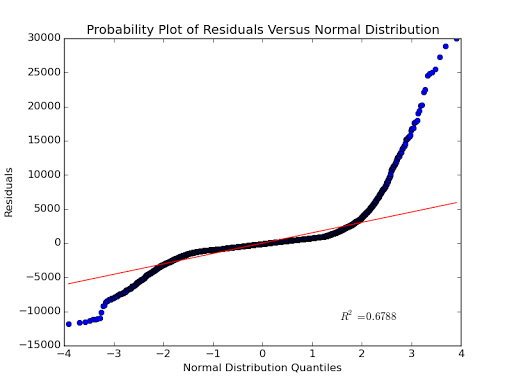
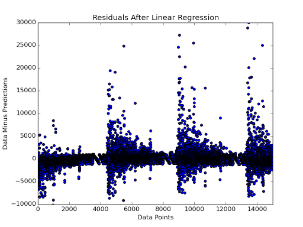
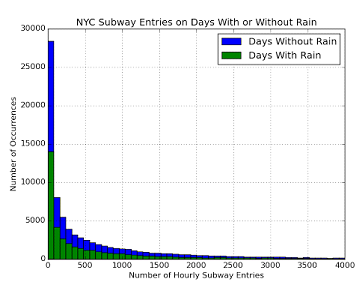
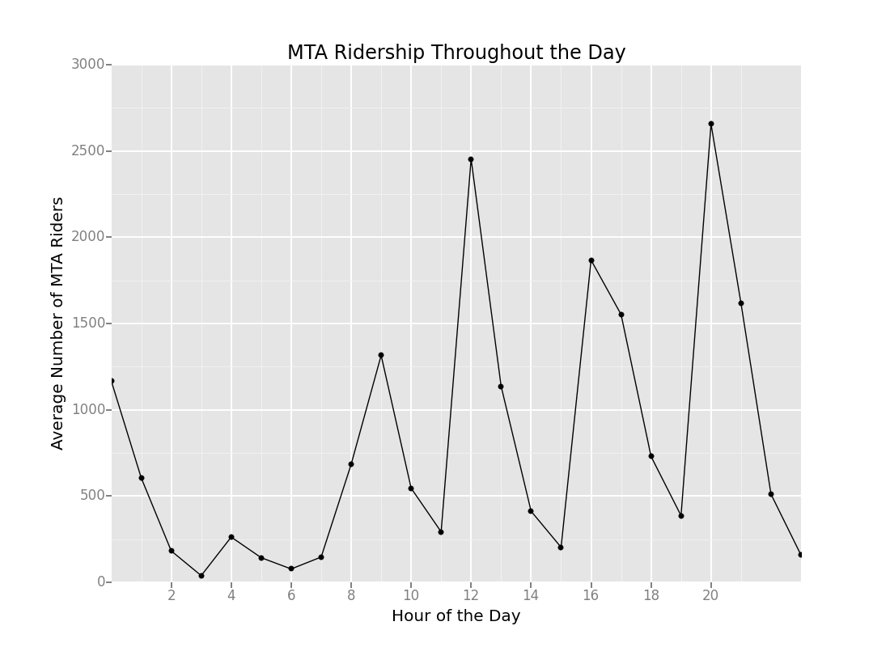

This project for Udacity's Intro to Data Science course combined SQL queries of WeatherUnderground data with csv files from the New York Transit Authority. The analysis was done in python using pandas and pandasql.
Statistical Test
Which statistical test did you use to analyze the NYC subway data? Did you use a one-tail or two-tail P value? What is the null hypothesis? What is your p-critical value?
For this analysis, I used the Mann-Whitney U test, which evaluates the null hypothesis that the distribution of ridership on rainy days is identical to the distribution of ridership on the days without rain. This means that if one randomly selected a rainy day and a non-rainy day, each would be equally likely have higher ridership. The alternative hypothesis is that either rainy days or non-rainy days are more likely to have higher ridership on a randomly selected day. Because the alternative hypothesis has two possibilities, with p-critical equal to 0.05.
Why is this statistical test applicable to the dataset? In particular, consider the assumptions that the test is making about the distribution of ridership in the two samples.
The Mann-Whitney U test is a non-parametric test (meaning that it does not assume a particular, underlying probability distribution) and it does not require the two samples to be of the same size. A histogram of the data (See Section 3.1) shows that the sample of non-raining days is much larger than the sample of rainy days and that neither sample is normally distributed.
What results did you get from this statistical test? These should include the following numerical values: p-values, as well as the means for each of the two samples under test.
The mean number of hourly entries on rainy days (rounded to the nearest whole person) was 1105, 15 people per hour higher than the mean number of hourly entries on non-rainy days, 1090. The Mann-Whitney U function included in the SciPy package returned a one-tail p value of 0.0250, which can be doubled to give a two-tail p value of 0.0500.
What is the significance and interpretation of these results?
The analysis produced a p value equal to p critical and so the null hypothesis can be rejected with 95% confidence. NYC subway ridership does differ on days with rain.
Linear Regression
What approach did you use to compute the coefficients (theta) and produce predictions for ENTRIESn_hourly in your regression model?
For the linear regression, I used the ordinary least squares function from StatsModels.
What features (input variables) did you use in your model? Did you use any dummy variables as part of your features?
The input variables I used were: occurrence of rain on the given day, amount of precipitation, hour of the day, minimum temperature of the day, the mean wind speed for the day, and dummy variables for the turnstile unit.
Why did you select these features in model?
The previous statistical test indicated that ridership increased on rainy days and it made sense that more people would ride the subway on days with hard rain rather than drizzle. I constructed a pivot table on a subset of the table that indicated ridership did increase during commute times and when I added hour of the day to the features array, the R2 increased. The dataset contained three values related to temperature: minimum, maximum, and mean daily temperature. I experimented with each individually and found the largest R2 improvement with minimum daily temperature. Further data exploration showed R2 increased by including wind speed.
What are the parameters (also known as “coefficients” or “weights”) of the non-dummy features in your linear regression model?
Intercept = 1305.00, rain = 54.11, precipitation = 2.86, hour = 65.39, minimum temperature = -10.46, and minimum windspeed = 25.24
What is your model’s R2 (coefficients of determination) value:
R2 was equal to 0.4800
What does this R2 value mean for the goodness of fit for your regression model? Do you think this linear model to predict ridership is appropriate for this dataset, given this R2 value?
R2 varies between 0 and 1, with 1 representing a perfect fit to the data. An R2 of 0.48 means that the model has accounted for 48% of the variability of the data, leaving 52% unaccounted for. This could be an acceptable value if the dataset was very noisy. A way to judge the goodness of fit is to plot the residuals (the differences between the data and the model prediction). If the model has included all of the salient features, then the residuals should represent random noise and be normally distributed about 0. The figure below does look symmetric about zero, but the tails are quite long.
A probability plot compares data values to a theoretical distribution. Plotting the residuals against a normal distribution should yield a straight line along x = y. The figure below does follow the straight line where the residuals are small, but the long tails of the histogram show up as wide divergences from the normal distribution.

Simply plotting the residual for each individual data point reveals structure in the model’s errors. There are also many data points where the model predicted tens of thousands more riders in that hour than actually entered the subway. Having an R2 value of 0.48 is indicating that this model is not fully explaining the data.

Visualization
Please include two visualizations that show the relationships between two or more variables in the NYC subway data. Remember to add appropriate titles and axes labels to your plots. Also, please add a short description below each figure commenting on the key insights depicted in the figure.
One visualization should contain two histograms: one of ENTRIESn_hourly for rainy days and one of ENTRIESn_hourly for non-rainy days.
From this pair of histograms, it is clear that the number of days with rain is less than the number of days without rain. Also, the data does not follow a normal distribution. The Mann-Whitney U test is appropriate for this analysis because it is non-parametric and does not require the sample sizes to be the same.

One visualization can be more freeform. You should feel free to implement something that we discussed in class or attempt to implement something more advanced if you’d like.
Average NYC subway ridership is not evenly distributed through the day. The highest numbers of entries occur at noon and 8 p.m. There are also large numbers of riders at midnight, 9 a.m., and 4-5 p.m. Few people ride the subway 2-7 a.m. or at 11 a.m., 2-3 p.m., or 6-7 p.m.

Conclusion
From your analysis and interpretation of the data, do more people ride the NYC subway when it is raining or when it is not raining?
Generalizing from this data, more people ride the NYC subway on days with rain.
What analyses lead you to this conclusion? You should use results from both your statistical tests and your linear regression to support your analysis.
The Mann-Whitney U statistical test indicated that the increase in ridership on rainy days was statistically significant with 95% confidence. Linear regression using ordinary least squares also indicates that rain does affect ridership. The occurrence of rain on a given day proved to be far more influential than the amount of precipitation. The theta coefficient for rain was 54.11, but the coefficient for precipitation was only 2.86. Presumably, people who would choose to walk or bike on a non-rainy day are more likely to choose the ride the subway on a rainy day.
Reflection
Please discuss potential shortcomings of the methods of your analysis, including: 1. Dataset, 2. Analysis, such as the linear regression model or statistical test.
This analysis did not attempt to remove outliers. This dataset was heavily skewed towards low values, but no attempt was made to determine if the zero values were the result of machine error and should be removed. Histograms of the data revealed very long tails, with hourly entries up to 60,000 people. Knowing nothing about NYC subway stations, one has to wonder if this number is even possible. Such large outliers could certainly skew the calculated mean of the sample. It may have been better to calculate the sample medians, however, the median could be shifted by the very large number of 0 values.
Both the ordinary least squares analysis and the linear regression with gradient descent included a very large number of dummy variables based on the turnstile unit. Printing out the complete list of parameters returned by the regression revealed thousands of values with coefficient values on the order of 103. R2 increases with additional parameters, yet in this analysis R2 remained below 0.5. In this analysis, R2 changed only slightly with combinations of weather data and time.
Plots of the residuals show that the model error is not normally distributed and that model errors can be extremely large both over and under predicting hourly ridership. The scatter plot of the residuals seems to reveal a cyclical pattern in the largest model errors. This sort of structure could result from non-linearity, which could not be captured by a linear model. Examination of the subway dataset reveals that the data is sorted by date and that the almost 132,000 data points represent only one month of ridership data, so there may be weekly factors not included in this model.